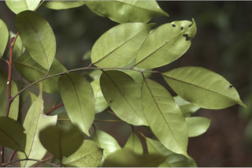
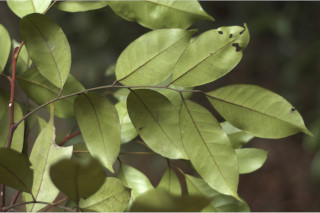
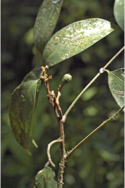
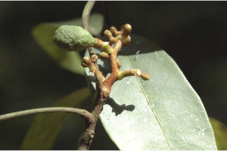
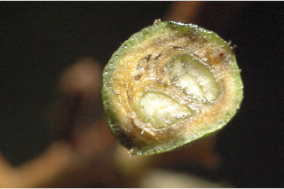
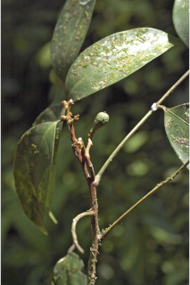
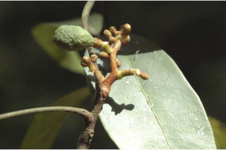
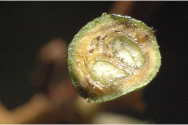

Large shrubs to small trees up to 8 m tall.
ದೊಡ್ಡ ಗಾತ್ರದ ಪೊದೆಗಳಿಂದ 8 ಮೀ ಎತ್ತರದವರೆಗಿನ ಸಣ್ಣ ಗಾತ್ರದ ಮರಗಳು.
Large shrubs to small trees up to 8 m tall.
பெரிய குத்துச்செடி முதல் சிறிய மரம், 8 மீ. உயரம் வரை வளரக்கூடியது.
Young branchlets subterete, ferruginous.
ಎಳೆಯ ಕಿರುಕೊಂಬೆಗಳು ಉಪದುಂಡಾದ ಆಕಾರ ಹೊಂದಿದ್ದು ತುಕ್ಕಿನ ಬಣ್ಣದಲ್ಲಿರುತ್ತವೆ.
Young branchlets subterete, ferruginous.
சிறியநுனிக்கிளைகள் குறுக்குவெட்டுத் தோற்றத்தில் வளையமானது, துருப்போன்ற உரோமங்களுடையது.
Leaves compound, imparipinnate, alternate, spiral; rachis terete, pulvinate, ferruginous; petiolule 0.3-0.6 cm long, canaliculate, slightly tomentose; leaflets 3-7, alternate, 7-14 x 2.5-4.5 cm, elliptic to elliptic-oblong, apex caudate or acuminate with blunt tip, base acute or slightly attenuate, margin entire, glandular punctate, ferruginous when young, later glabrous; secondary_nerves 8-12 pairs, looped near margin; tertiary_nerves broadly reticulate to obscure.
ಎಲೆಗಳು ಸಂಯುಕ್ತವಾಗಿದ್ದು,ಅಸಮಗರಿ ರೂಪಿಗಳಾಗಿದ್ದು,ಪ್ರಯಾಯ ಹಾಗೂ ಸುತ್ತು ಜೋಡನಾ ಮಾದರಿಯಲ್ಲಿ ಜೋಡನೆಗೊಂಡಿರುತ್ತವೆ;ಅಕ್ಷದಿಂಡು ದುಂಡಾಗಿದ್ದು,ಉಬ್ಬಿದ ಬುಡ ಸಮೇತವಿದ್ದು ತುಕ್ಕಿನ ಬಣ್ಣದ ರೋಮಗಳಿಂದ ಕೂಡಿರುತ್ತದೆ;ಉಪತೊಟ್ಟುಗಳು 0.3 ರಿಂದ 0.6 ಸೆಂ.ಮೀವರೆಗಿನ ಉದ್ದ ಹೊಂದಿದ್ದು ಕಾಲುವೆ ಗೆರೆ ಸಮೇತವಿದ್ದು ಸ್ವಲ್ಪಮಟ್ಟಿಗೆ ದಟ್ಟ ಮೃದು ತುಪ್ಪಳದಿಂದ ಆವೃತವಾಗಿರುತ್ತವೆ; ಕಿರುಪತ್ರಗಳು 3 ರಿಂದ 7 ಇದ್ದು,ಪರ್ಯಾಯವಾಗಿ ಜೋಡಿತವಾಗಿದ್ದು 7-14 X 2.5 - 4.5 ಸೆಂ.ಮೀ ಗಾತ್ರ,ಅಂಡವೃತ್ತದಿಂದ ಅಂಡವೃತ್ತ-ಚತುರಸ್ರದವರೆಗಿನ ಆಕಾರ, ಬಾಲ ರೂಪಿ ಅಥವಾ ಕ್ರಮೇಣ ಚೂಪಾಗುವ ತುದಿ,ಚೂಪಾದ ಅಥವಾ ಸ್ವಲ್ಪಮಟ್ಟಿಗೆ ಒಳಬಾಗಿದ ಬುಡ, ನಯವಾದ ಅಂಚು,ಮಚ್ಚೆ ರೀತಿಯ ರಸಗ್ರಂಥಿಗಳ ಸಮೇತವಿದ್ದು ಎಳೆಯದಾಗಿದ್ದಾಗ ತುಕ್ಕಿನ ಬಣ್ಣದ ರೋಮಗಳಿಂದ ಕೂಡಿದ್ದು ನಂತರ ರೋಮರಹಿತವಾಗಿರುತ್ತವೆ;ಎರಡನೇ ದರ್ಜೆಯ ನಾಳಗಳು 8-12 ಜೋಡಿಗಳಿದ್ದು ,ಅಂಚಿನ ಬಳಿ ಕುಣಿಕೆಗೊಂಡಿರುತ್ತವೆ;ಮೂರನೇ ದರ್ಜೆಯ ನಾಳಗಳು ವಿಶಾಲ ಜಾಲಬಂಧ ನಾಳ ವಿನ್ಯಾಸದಿಂದ ಹಿಡಿದು ಅಸ್ಪಷ್ಟವಾಗಿರುವರೆಗಿನ ಮಾದರಿಯಲ್ಲಿರುತ್ತವೆ.
Leaves compound, imparipinnate, alternate, spiral; rachis terete, pulvinate, ferruginous; petiolule 0.3-0.6 cm long, canaliculate, slightly tomentose; leaflets 3-7, alternate, 7-14 x 2.5-4.5 cm, elliptic to elliptic-oblong, apex caudate or acuminate with blunt tip, base acute or slightly attenuate, margin entire, glandular punctate, ferruginous when young, later glabrous; secondary_nerves 8-12 pairs, looped near margin; tertiary_nerves broadly reticulate to obscure.
இலைகள் கூட்டிலை, ஒற்றைபடை சிறகு வடிவக்கூட்டிலைகள், மாற்றுஅடுக்கமானவை, சுழல் போன்று அமைந்தவை; மத்தியகாம்பு (ராக்கிஸ்) குறுக்குவெட்டுத் தோற்றத்தில் வளையமானது, பல்வினேட், துருப்போன்ற உரோமங்களுடையது; சிற்றிலைக்காம்பு 0.3-0.6 செ.மீ. நீளமானது, குறுக்குவெட்டுத் தோற்றத்தில் கேனாலிகுலேட், சிறிது உரோமங்களுடையது; சிற்றிலைகள் 3-7, மாற்றுஅடுக்கமானவை, 7-14 X 2.5-4.5 செ.மீ., நீள்வட்ட வடிவானது முதல் நீள்வட்டம்-நீள்சதுர வடிவானது, அலகின் நுனி வால் போன்றது அல்லது சிறிது அதிக்கூரியதுடன் அதன் முனை மழுங்கியது, அலகின் தளம் கூரியது அல்லது சிறிது அட்டனுவேட், அலகின் விளிம்பு முழுமையானது, ஒளிபுகும் சுரப்பி புள்ளிகளுடையது, இளம்பருவத்தில் துருப்போன்ற உரோமங்களுடையது, முதிரும் போது உரோமங்களற்றது; இரண்டாம் நிலை நரம்புகள் 8-12 ஜோடிகள், ஒன்றொடுன்று விளிம்பின் அருகில் (லுப்) இணைந்தவை; மூன்றாம் நிலை நரம்புகள் அகன்ற வலைப்பின்னல் போன்றவை முதல் கண்களுக்கு புலப்படாது.
Inflorescence axillary panicles, tomentose; flowers small, sessile.
ಪುಷ್ಪಮಂಜರಿಗಳು ಅಕ್ಷಾಕಂಕುಳಿನಲ್ಲಿನ ಪುನರಾವೃತ್ತಿಯಾಗಿ ಕವಲೊಡೆಯುವ ಮಾದರಿಯವುಗಳಾಗಿದ್ದು, ದಟ್ಟ ಮೃದು ತುಪ್ಪಳದಿಂದ ಕೂಡಿರುತ್ತವೆ;ಹೂಗಳು ಸಣ್ಣ ಗಾತ್ರದವುಗಳಾಗಿದ್ದು ತೊಟ್ಟುರಹಿತವಾಗಿರುತ್ತವೆ.
Inflorescence axillary panicles, tomentose; flowers small, sessile.
மஞ்சரி இலைக்கோணங்களில் காணப்படுபவை, பேனிக்கிள் வகை மஞ்சரி, உரோமங்களுடையது; மலர்கள் சிறியவை, காம்பற்றது.
Berry, globose, apiculate, up to 2 cm across, white turning to pink; seeds 2-3.
ಬೆರ್ರಿಗಳು ಗೋಳಾಕಾರದಲ್ಲಿದ್ದು ಅಗ್ರದಲ್ಲಿ ಸಣ್ಣದಾದ ಮೊನಚು ಮುಳ್ಳಿನ ಸಮೇತವಿರುತ್ತವೆ, 2 ಸೆಂ.ಮೀ. ವರೆಗಿನ ಗಾತ್ರ ಹೊಂದಿರುತ್ತವೆ;ಬೀಜಗಳ ಸಂಖ್ಯೆ 2-3.
Berry, globose, apiculate, up to 2 cm across, white turning to pink; seeds 2-3.
முழுச்சதைகனி (பெர்ரி), கோள வடிவமானது, நீட்சியுடையது, 2 செ.மீ. குறுக்களவுடையது, வெள்ளை நிறமானது பிறகு பிங்க் நிறமானது; விதைகள் 2-3.
 



 




